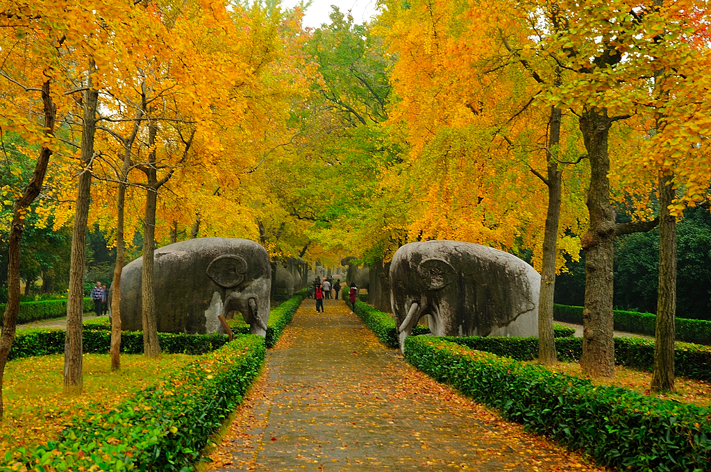
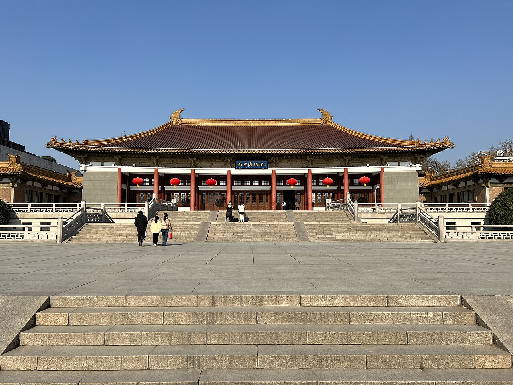
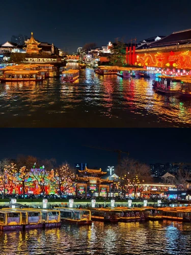
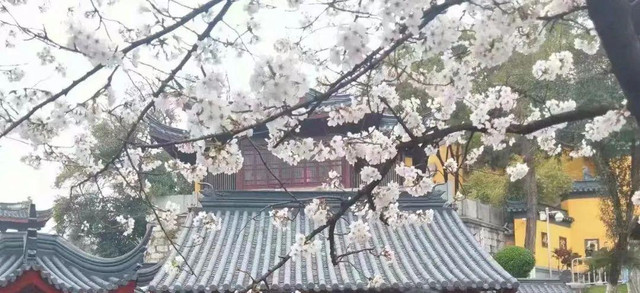
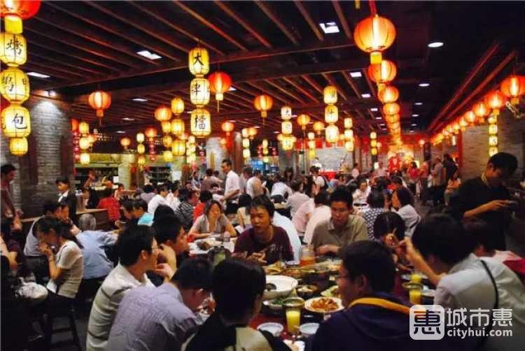
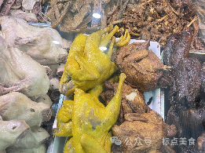
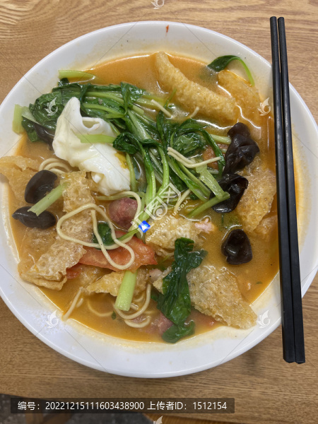
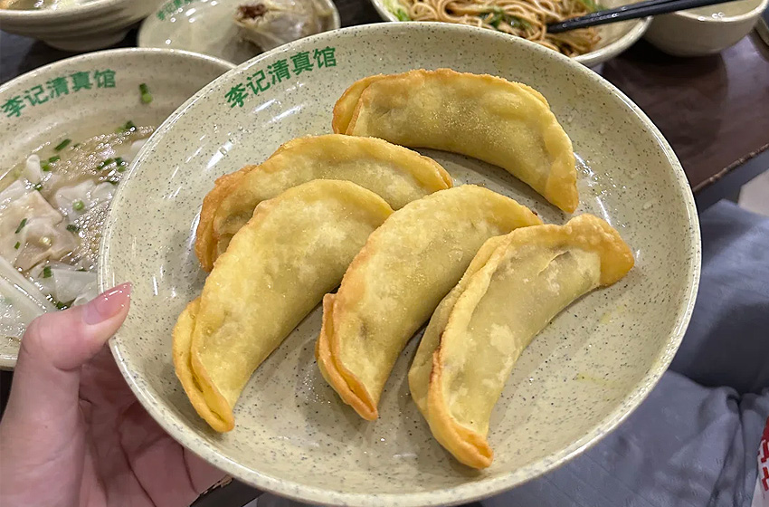
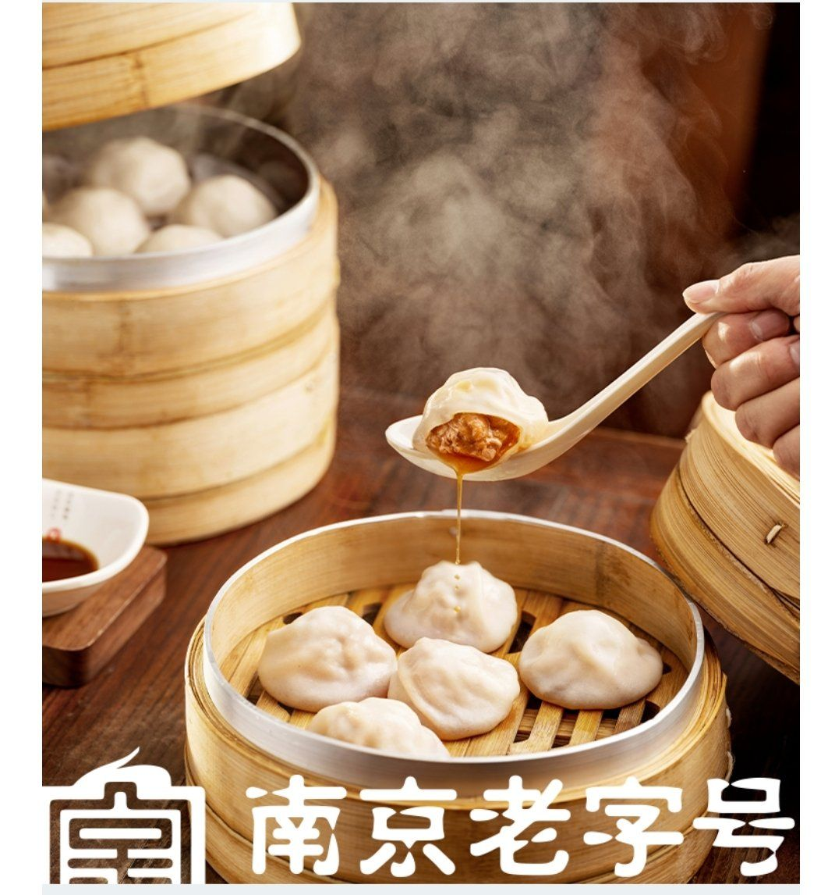
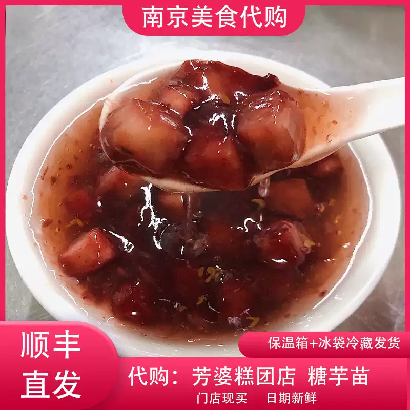

01
钟山风景区 · 体力日
中山陵 → 音乐台 → 明孝陵 → 美龄宫
全天在山里，紫金山南麓一条线走完。392 级台阶 + 石象路神道，是南京最经典的一天。
门票合计 110 元 · 步行约 8 km
第一次来南京的标准走法：Day1 钟山看山水陵寝，Day2 总统府 + 南博 + 秦淮看历史烟火，Day3 城墙玄武湖收尾。不排任何纪念馆；画舫不坐，改为步行夜游。
三个片区互不重叠，每天一个方向，地铁串联，不需要自驾。
全天在山里，紫金山南麓一条线走完。392 级台阶 + 石象路神道，是南京最经典的一天。
上午民国史，下午六朝到民国的通史，晚上秦淮灯影。这一天信息量最大，也最出片。
从明城墙上看湖与寺，下午环湖或钻梧桐老洋房，节奏最松，适合收尾和返程。
12 个标记点覆盖三天的全部目的地：东侧紫金山一簇是 Day1，中部偏南是 Day2，北侧玄武湖—鼓楼一带是 Day3。点位为示意位置，实际导航请点开地图交互。
紫金山南麓，地铁 2 号线「苜蓿园」站进山。景区极大，务必买观光车票，别全程走路。

392 级花岗岩台阶自博爱坊直上祭堂，山下的音乐台是半圆扇形露天舞台，白鸽成群。
苜蓿园进山后由东向西一条线：中山陵 → 音乐台（步行 10 分）→ 明孝陵（观光车）→ 美龄宫（步行 15 分）。四个点都在紫金山南麓，靠观光车串联，不要靠腿走。
1 号口出站，换乘景区观光车进山。观光车分段计费 15–30 元，可买单程也可买联程。自驾不建议，节假日停车场一位难求。
中国近代规模最大、规格最高的纪念性陵墓，孙中山先生的安息之地，也是南京的城市象征。1926 年动工、1931 年建成，吕彦直设计的方案在当年竞选中获首奖，整座陵园依紫金山南麓缓坡铺展，从空中俯瞰是一条完整的「自由钟」轮廓——博爱坊是钟钮，392 级石阶是钟摆，祭堂是钟锤，寓意「唤起民众」。
进园从博爱坊开始，经墓道、陵门（门额「天下为公」）、碑亭（碑文为谭延闿手书）、392 级花岗岩石阶，直到最高处的祭堂与墓室。台阶刻意做成十段，每段一个平台：从下往上看只见台阶不见平台，从上往下看只见平台不见台阶，是当年设计者的一处巧思。祭堂内是孙中山先生汉白玉坐像，四壁为《建国大纲》全文，堂后墓室为圆形穹顶，中央是卧像与地下墓穴。
登顶回望，整片紫金山林海与南京城东的天际线一起铺开，是全程最值得停下来的一个视角。台阶坡度不小，老人和小孩建议走两侧缓坡道；夏天正午石阶暴晒，尽量赶早。中山陵与明孝陵、灵谷寺同属钟山风景区，三者之间靠景区观光车串联。
免费，但须提前 1–3 天在「中山陵园票务」公众号预约；周一闭馆；墓室仅周二至周五开放（法定节假日除外）。
中山陵的配套露天音乐演出场地，1933 年由杨廷宝设计建成，是民国时期首都最重要的公共文化建筑之一。它不是一个「景点」意义上的古迹，而是一座真正被使用过的户外剧场：半圆扇形看台依坡而建，可容三千人；舞台后方的照壁做成回音壁，声音打到弧面上会自然汇聚反射回观众席，当年不用扩音设备也能听清。
如今音乐台的功能早已从演出转向休憩与拍照。中心是一片大草坪，常年养着一群白鸽，鸽子不怕人，会在脚边踱步、起飞时整片掠过头顶。半圆弧的看台、背后爬满藤蔓的照壁、草坪与远处的紫金山，构成一个天然取景框，是南京公认最出片的机位之一，婚纱摄影常年在此扎堆。
从中山陵祭堂下来顺路即到，步行几分钟。地方不大，40 分钟足够，适合作为登山后的缓冲。想拍空景要赶早或临近闭园；鸽子起飞多在投喂时，现场有小包鸽食出售。
门票 10 元。喂鸽子的小食现场有卖。
景区内餐饮选择少且贵，建议观光车下山到「下马坊」一带吃，或自带简餐在音乐台草坪解决。
明太祖朱元璋与马皇后的合葬陵，世界文化遗产，也是中国明清皇家陵寝制度的开创之作。它定下的「前朝后寝、前方后圆、神道引导」格局，后来被北京十三陵等明清帝陵整体沿用，在中国陵寝史上属于「样板」级别的存在。整个景区是遗址型的帝王陵园，不是博物馆，看的是建筑格局、石刻与山林环境本身。
核心是石象路神道：600 米长的神道并非笔直，而是随梅花山地形折成月牙形，两侧依次排列狮、獬豸、骆驼、象、麒麟、马六种石兽，每种两对（一卧一立），共 12 对 24 件。石兽之后是翁仲路的文臣武将石像。秋天两侧乌桕、枫香、银杏次第变色，红黄交织，被称为「南京最美的 600 米」，每年 11 月中下旬是顶峰。
走完神道，经棂星门、金水桥，进入陵宫主体：文武方门、享殿（原建筑已毁，现存为清末重建）、内红门、升仙桥，最后是方城与明楼。方城是一座巨大的城墙式台基，中间的券门可登明楼俯瞰；再往北的宝顶（独龙阜）下即朱元璋与马皇后的合葬地宫，未发掘。整条动线走完约 2.5 小时，坡度平缓，是钟山三处里最省力的一处。
门票 70 元，景区开放 6:30–18:00。从观光车「明孝陵」站下车，建议从大金门进、石象路 → 翁仲路 → 棂星门 → 金水桥 → 方城明楼的顺序走。
正式名称是「国民政府主席官邸」，因宋美龄常在此居住而俗称美龄宫。1931 年始建、1934 年竣工，三层中西合璧的官邸别墅，绿色琉璃瓦顶配汉白玉栏杆，是民国南京「首都计划」时期最高水准的建筑之一。现在作为旧址纪念馆开放，内部按原状陈列会客厅、卧室、餐厅等生活场景。
它最出名的是那个「梧桐项链」构图：环绕小红山的环陵路两侧种满法国梧桐，从空中看是一圈完整的椭圆项链，而美龄宫正好落在项链下端的坠子上，绿色琉璃瓦顶就是那颗宝石。这个视角在 2015 年前后被航拍照片带火，成了南京最具辨识度的城市意象。地面游览看不到这个形状，但站在宫前平台上，能感受到环山梧桐围出的那道弧。
建筑本身值得细看：一层是会客与办公空间，二层为起居室与卧室，三层是凯歌堂（小型礼拜堂），地下还有供暖锅炉房——在 1930 年代的中国属于相当超前配置。室内保留了部分原家具与照片，可以直观看到民国上层生活的样子。参观约 1 小时，就在明孝陵东侧，步行或坐一站观光车即可到达。
门票 30 元，开放 7:30–17:30。就在明孝陵景区东侧，步行或坐一站观光车即到。
观光车下山 → 地铁 2 号线回市区。若体力尚余且正值深秋，可加灵谷寺（35 元，银杏绝美）——见文末「全部备选项 A1」。
德基广场（一期二期）、南京大牌档（一次吃全金陵小吃）。新街口是 1/2 号线换乘枢纽，回酒店最方便。


上午长江路民国史，下午中山东路通史，晚上城南秦淮灯影。这一天两处都要提前抢票，是全行程最需要规划的一天。

中国近代建筑遗存中规模最大的一组，从两江总督署到太平天国天王府，再到民国总统府，600 年官署史叠在同一片院子里。
上午长江路总统府，中午地铁 2 号线东行至南京博物院（明故宫站），下午折回城南老门东，步行 12 分钟到夫子庙看夜秦淮。这一天横跨城中心与城南，全程地铁 + 步行。
出站即长江路，向东步行到长江路 292 号。大行宫是 2/3 号线换乘站，从新街口过来只有一站。
中国近代史最重要的遗址型博物馆，也是中国近代建筑遗存中规模最大的一组。它的特殊之处在于：同一片院子，从明初的汉王府、清代的两江总督署、太平天国的天王府，一路叠到中华民国总统府，六百年的官署史压在同一块地基上。林则徐、曾国藩、李鸿章、左宗棠、张之洞都曾以两江总督身份在此办公，1912 年孙中山在这里就任临时大总统。
动线建议：门楼 → 大堂 → 二堂 → 子超楼（总统办公室）→ 近代史陈列 → 煦园。门楼是 1929 年建成的西式建筑，也是南京最著名的历史照片背景之一。子超楼（因林森字子超得名）里的总统办公室、国务会议厅为原状陈列，桌椅、台灯、日历都按 1948 年前后的样子摆放，是全馆信息密度最高的部分。中轴两侧的史料陈列按晚清、太平天国、民国分段铺开，建议至少留 40 分钟。
最后不要错过西侧的煦园：明代汉王府的花园，也是南京现存最完整的江南园林之一。石舫（不系舟）、忘飞阁、桐音馆都临水而建，池水与回廊构成很好的取景层次，是整个总统府里最安静、也最出片的角落。多数游客看完主楼就走，这里往往人少。
门票 35 元，提前 2 天 0:00 放票（官方公众号「南京总统府」）；周一闭馆；开放 8:30–18:00（17:00 停止入场）。
总统府西侧的 1912 街区是民国风格建筑群，餐饮集中；大行宫地铁站周边也有大量选择。
1 号口出站，沿中山东路向东步行约 8 分钟到中山东路 321 号。行李可在南博服务中心免费寄存。
中国三大博物馆之一（另两座是故宫博物院、上海博物馆），前身是 1933 年蔡元培倡建的国立中央博物院筹备处，主殿由徐敬直设计、梁思成修订，仿辽代大殿造型，是中国近代「固有形式」建筑的代表作。如今是「一院六馆」格局：历史馆、特展馆、数字馆、艺术馆、民国馆、非遗馆，馆藏文物四十余万件，从旧石器时代一路铺到近现代。
经典动线：历史馆 → 数字馆 → 特展馆 → 艺术馆 → 民国馆 → 非遗馆。历史馆按朝代顺序展开，是全场精华：2 号厅的人鸟兽玉饰、神人兽面纹玉琮（良渚文化），3 号厅的广陵王玺金印、银缕玉衣、错银铜牛灯，4 号厅的「竹林七贤与荣启期」模印砖画（中国现存最早的大型人物砖画），以及唐三彩双鱼瓶、6 号厅的大报恩寺琉璃塔拱门——这些是「一次看全」性价比最高的路线。
民国馆是南博最特别的一馆：整层按 1930 年代南京街景 1:1 复原，有火车站、邮局、药铺、理发店、银行，可以走进店铺内部，灯光调成黄昏色调，是全场最受欢迎的拍照区，也最适合带孩子。非遗馆常设传统手工艺展演，能看到现场制作。全程走完 3.5 小时是下限，看得细要 4–5 小时，馆内有咖啡与简餐，可以中途休息。
免费，提前 7 天每日 18:00 一次性放票，无当日票；周一闭馆；9:00 开门、16:00 停止入馆、17:00 闭馆。爽约有惩罚：30 天内取消满 2 次限约 30 天。
💡 若从艺术馆进场排队人明显更少，可反向走：民国馆 → 艺术馆 → 历史馆 → 数字馆 → 特展馆 → 非遗馆。
历史街区型商业文化区，位于中华门城堡以东、明城墙脚下。「老门东」这个名字来自它相对「门西」的位置——中华门（聚宝门）以东的城南片区，历史上是南京手工业与商贾最密集的地方。街区按修旧如旧的方式重建，马头墙、砖雕门罩、石板路、老井都沿用南京城南民居的做法，不是凭空造的古街。
范围不大，主街箍桶巷加几条横巷，一小时能走完，但值得慢慢逛。核心看点是骏惠书屋——一栋整体迁建而来的徽派建筑，木雕梁架极为精细，现为书店；芥子园是李渔故居旧址上重建的小园林；沿街的砖雕门楼与老墙门也值得逐个看。傍晚灯笼亮起后，青砖与暖光形成很强的层次感，比白天上镜得多。
比起夫子庙核心区，这里游客密度低一档、小吃价格也实在一些：蒋有记锅贴、小郑酥烧饼、司记豆腐脑、黄勤记凉粉都在步行范围内。从南博打车约 15 分钟，或地铁 3 号线到「武定门」站。Day2 傍晚过来正好把这里当晚饭地点，吃完步行 15 分钟就到夫子庙看灯。
街区免费。牌坊 → 箍桶巷 → 三条营的巷子最好逛，尽头可上城墙看城南屋顶。
以孔庙与秦淮河风光带为核心的开放式景区。夫子庙即南京文庙，始建于宋代，是明清江南科举文化的中心；庙前的秦淮河两岸则是自六朝延续至今的传统商市与灯船夜游区。这一带的价值不在某一栋建筑，而在「庙、市、河」三者叠在一起的市井格局——白天看文庙与科举遗迹，入夜看灯影与画舫。
推荐步行路线：夫子庙大成殿 → 天下文枢牌坊 → 文德桥 → 乌衣巷 → 桃叶渡。大成殿是文庙主体，殿前有孔子铜像与泮池；「天下文枢」牌坊是这一带最著名的取景点。文德桥上看秦淮河两岸灯影，是全场最佳机位——桥身正对泮池与大照壁，夜里灯影落在水面上，是南京最经典的一张照片。
过桥往南是乌衣巷，东晋王导、谢安两大家族曾居于此，刘禹锡「朱雀桥边野草花，乌衣巷口夕阳斜」写的就是这里，巷内现有王导谢安纪念馆。再往东的桃叶渡是王献之迎妾桃叶的渡口，游客少、水面开阔，适合作为夜游的收尾。整条线慢慢走 2 小时，不必买任何门票。
街区免费，全天开放。画舫按你的决定不坐，改为步行；替代方案见文末 B3。



城北一线，节奏最松。上午登城墙看湖与寺，下午二选一：环湖（自然）或颐和路（人文）。

解放门到玄武门这一段，是明城墙现存最高大完好的一段，墙内是鸡鸣寺，墙外是玄武湖。
上午解放门登台城城墙走到玄武门，下城墙步行 8 分钟到鸡鸣寺，再进玄武湖环洲—樱洲—菱洲。下午往西去颐和路民国公馆区，地铁 1 号线一站到鼓楼再步行。
古代城防工事遗存。南京明城墙建于 1366–1393 年，全长 35.3 公里，是世界现存最长的古代城墙；其中台城段（解放门至玄武门）是保存最高大、最完整、也最适合步行的一段。「台城」原是六朝宫城之名，后人把这段城墙附会为台城旧址，名字沿用至今。
从解放门登城，向西走到玄武门，全程约 1.5 公里。这段城墙的特殊之处在于一墙之内同时收纳了鸡鸣寺的黄墙、玄武湖的水面和紫峰大厦的玻璃幕墙——六百年的砖、二十年的玻璃，同框在一个画面里，是南京最出名的「古今同框」机位。城墙顶面宽阔，可以并行数人，两侧都有垛口，走起来毫无压迫感。
途中会经过九华山与玄武门两处出口，体力不支可随时下城。城砖上还能看到当年的烧制铭文——府、县、窑匠、提调官的名字都刻在砖侧，这是明初「物勒工名」的责任制，也是南京城墙最有意思的细节之一。建议解放门上、玄武门下，一路向西不折返，下城正好进玄武湖。
门票 30 元。地铁 3/4 号线「鸡鸣寺」站或 3 号线「南京站」方向均可；建议解放门上、玄武门下，一路向西不折返。
汉传佛教寺院，南京最古老的梵刹之一，始建于西晋永康元年（300 年），距今一千七百余年，素有「南朝第一寺」「南朝四百八十寺之首」之称。它依鸡笼山而建，山门在山脚、殿宇层层向上，是典型的「依山式」伽蓝布局。现在是一座香火旺盛的在用寺院，不是遗址公园。
进寺后一路拾级而上：天王殿、大雄宝殿、观音殿、豁蒙楼，最高处是药师佛塔。塔为七级八面，可登塔俯瞰玄武湖与明城墙，是这一带最高的观景点。寺内黄墙、灰瓦与山势结合得很紧凑，加上香火烟气，氛围比多数景区寺院更真实。豁蒙楼是民国时期文人常聚之处，楼上有茶座，可以坐下来歇脚。
三月下旬寺前的鸡鸣寺路樱花盛开，黄墙、樱花、城墙、紫峰大厦同框，是南京春季最著名的画面，也是人流最高峰，需要提前预约且几乎无法拍照。平日则相当安静，反而更能看清寺院本身。寺内素面馆口碑不错，可当简餐；门票 10 元含三支香。
门票 10 元（含三支香）。寺内素面馆口碑不错，可当简餐。
狮子桥美食街是南京老牌小吃街，鸭血粉丝、牛肉锅贴、小笼包都能找到。从玄武门出来步行或打车约 10 分钟。
城市湖泊公园，江南地区最大的城内湖泊，古称桑泊、后湖，六朝时是皇家园林与水军操练之地，明代成为存放黄册（户口赋役档案）的后湖黄册库，与城墙一体封闭了两百多年。如今是完全免费开放的市民公园，湖中五洲（环洲、樱洲、菱洲、梁洲、翠洲）以堤桥相连。
从玄武门进，走环洲 → 樱洲 → 菱洲一段即可，不必环全湖——全环约 10 公里，走完要三小时以上。环洲有假山与儿童乐园，樱洲春季樱花成片，菱洲视野最开阔。湖面上看明城墙与紫金山倒影，是南京最舒服的两小时：水面宽、风大、树荫足，夏天比市区低两三度。
园内有观光车与游船，脚力有限可以坐车；湖边步道平坦，也适合骑行。傍晚时分从菱洲往玄武门方向回望，城墙、湖水、落日三层叠在一起，是这一天的收尾画面。免费开放，全天可进。
免费开放。园内有观光车和游船，脚力有限可坐车。
民国公馆建筑群历史街区。1927 年国民政府定都南京后推行「首都计划」，在城北颐和路一带规划了高级住宅区，十几年间建成 1700 余户官邸公馆，政要、外交官、实业家、文化名人多居于此，被称为「民国使馆区」。这是中国规模最大、保存最完整的民国住宅建筑群，如今是开放式街区，不收费。
建筑本身是最大看点：黄墙红瓦、坡屋顶、老虎窗、拱券门廊，西式骨架里嵌着中式细节，几乎每一栋门口都挂着「南京市重要近现代建筑」的铭牌，写明旧主与建造年代。街道两侧的法国梧桐树龄近百年，夏天整条路都在树荫里，秋天落叶铺满路面。
推荐路线：江苏路 → 颐和路 → 珞珈路 → 牯岭路，全程约 2 公里，慢慢走两小时。不排队、不收费、不需要预约，是南京最出片的散步路线，也是行程里最松弛的一段。部分院落（如颐和路十二片区）已修缮开放，可入内参观，需另行预约。地铁 4 号线「云南路」站或 1 号线「鼓楼」站步行可达。
免费。地铁 4 号线「云南路」站或 1 号线「鼓楼」站步行可达。推荐路线：江苏路 → 颐和路 → 珞珈路 → 牯岭路。
颐和路到新街口打车约 10 分钟，地铁 1 号线一站。可在此买盐水鸭、板鸭带走。


南京热门场馆全部实名预约制，没有现场票。以下是核实过的放票规则，按倒排时间准备。
| 场馆 | 票价 | 放票规则 | 预约渠道 | 关键提醒 |
|---|---|---|---|---|
| 南京博物院 中山东路 321 号 |
免费 | 提前 7 天 每日 18:00 一次性放票 |
「南京博物院」公众号 / 小程序 | 无当日票；16:00 停止入馆；周一闭馆。爽约惩罚：30 天内累计 2 次未取消爽约，限制预约 30 天。定好闹钟 17:58 蹲守。 |
| 总统府 长江路 292 号 |
35 元 | 提前 2 天 每日 0:00 放票 |
「南京总统府」公众号 | 周一闭馆。放票量有限，节假日建议 0:00 准时抢。 |
| 中山陵 紫金山南麓 |
免费 | 提前 1–3 天预约 | 「中山陵园票务」公众号 | 周一闭馆；墓室仅周二至周五开放。预约时段需按实际到访时间选。 |
| 南京城墙博物馆 中华门瓮城东侧 |
免费 | 提前 1 天实名预约 分上下午场 |
「南京城墙」公众号 | 不接受现场预约；上午场须当日 13:00 前入馆，过时作废。 |
| 中国科举博物馆 夫子庙内 · 江南贡院 |
50 元 半价 25 元 |
可现场购票 | 现场 / 线上均可 | 9:00–22:00 全年无休，是周一唯一稳开的馆，可作为周一备胎。 |
Day2 前 7 天的 18:00 抢南博 → Day2 前 2 天的 0:00 抢总统府 → Day1 前 1–3 天约中山陵。三个闹钟分三天设，不要挤在同一天。
南京绝大多数博物馆周一闭馆（南博、总统府、朝天宫、六朝、江宁织造、城墙博物馆均闭）。若行程含周一，当天只排：明孝陵、中山陵景区外围、玄武湖、颐和路、夫子庙街区、科举博物馆（全年无休）。
瞻园：白天 30 元 / 夜场 70 元（17:00–23:00）；六朝博物馆 30 元；朝天宫（南京市博物馆）25 元；江宁织造博物馆 20 元；灵谷寺 35 元；台城城墙 30 元；鸡鸣寺 10 元；音乐台 10 元；明孝陵 70 元；美龄宫 30 元。
下面把每个分叉点的所有可选方案并列列出，标注耗时、票价与取舍理由。默认方案已标「默认」，其余留给你拍板。
核心矛盾：灵谷寺要不要加，以及体力分配。
明孝陵 + 美龄宫走完就回城，晚上留给新街口。适合：第一次来、不想一天走 10 km、带长辈小孩。
35 元，深秋银杏大道极美，「灵谷深松」是金陵四十八景之一。适合：体力好、正值 11 月、喜欢清净。
核心矛盾：南博 3.5 小时值不值，以及画舫不坐之后夜游怎么替代。
历史馆 → 数字馆 → 特展馆 → 艺术馆 → 民国馆 → 非遗馆。一次看全江苏通史 + 民国街景，性价比最高。建议反向走（民国馆 → 艺术馆 → 历史馆 → 数字馆 → 特展馆 → 非遗馆），艺术馆正向排队最长，反向可避人流。
30 元，长江路 302 号，就在总统府隔壁，贝聿铭事务所设计的竹影光影极出片。小而精，1.5 小时看完，省下的时间给老门东。
20 元，大行宫地铁口，红楼梦与云锦主题，1 小时可看完。适合 Day2 时间富裕或对织造/红楼感兴趣。
不坐画舫，沿河岸步道走：天下文枢牌坊 → 泮池 → 乌衣巷 → 文德桥。灯影倒映水面，走路看更自由，可随时停下拍照。想清净就往东多走 10 分钟到乌衣巷—桃叶渡一段（王导谢安纪念馆、桃叶渡口），人立刻少一半。
50 元，世界现存规模最大的城墙瓮城，夜里打灯后气势完全不同。位置在城南，需从夫子庙打车 10 分钟。
夜场 70 元（17:00–23:00），白天 30 元。金陵第一园，夜场有实景演出，但票价是白天两倍多。
默认 C1 + C2 都排进去；若想放慢节奏，可只选一个。
免费。玄武门进，走环洲 → 樱洲 → 菱洲一段，湖上看城墙与紫金山倒影。全环约 10 km，不建议走完。
免费。1700 多户官邸公馆藏在梧桐深处，不排队、不收费，南京最出片的散步路线。江苏路 → 颐和路 → 珞珈路 → 牯岭路。
若想把下午换成室内，从下面挑一个；都是 1.5 h 左右，不叠加。
下面三种节奏任选，不影响上面的分项选择。
本页行程即此版。每天 8:30 出门、18:30 收工，既有经典景点也有博物馆，体力要求中等。
每天 8:00 出门、20:00 收工，Day1 加灵谷寺、Day2 加六朝或江宁织造、Day3 加城墙博物馆。适合体力好、只来一次的人。
每天 9:30 出门、17:00 收工，砍掉音乐台、鸡鸣寺或颐和路，留出咖啡馆和午休时间。适合带长辈或小孩。
这些不在三天主线里，列出来供你后续挑。
佛顶宫与佛顶塔，建筑体量惊人。在城南江宁，单程 1 小时以上，需占掉半天到一天。
「春牛首、秋栖霞」，深秋红叶是南京第一。在城东北，单程 50 分钟，红叶季人多。
另外请告诉我出行日期与星期和住宿片区——这两项决定南博抢票倒排与周一闭馆避让。你把编号告诉我（例如「A1 + B1 + B4 + C1C2 + D1」），我再出定稿版。
三天动线是「东 → 中 → 北」，住宿选在中间的新街口或大行宫最省通勤。
1 / 2 号线换乘枢纽
去钟山坐 2 号线直达，去大行宫两站，去玄武湖两站。吃饭、购物、打车全方便，酒店从快捷到五星都有。
2 / 3 号线
总统府、六朝博物馆、江宁织造博物馆、南博全在步行圈内，Day2 几乎不用坐车。文化氛围最好。
3 号线
夜里出门就是秦淮灯影，民宿多、价格弹性大。缺点是去钟山要换乘，通勤多 20 分钟。
1 / 4 号线
紧邻玄武湖和颐和路，Day3 出门即景。适合把第三天当重点、且喜欢安静的人。
一次吃全金陵小吃：盐水鸭、糖芋苗、赤豆元宵、天王烤鸭包、桂花糕。德基、狮子桥都有店，饭点排队。
南京人的早餐主力。鸭血、鸭肠、鸭肝、油豆腐配粉丝，加一勺辣油。街边小店比商场店地道。
桂花鸭（盐水鸭）现吃最佳，皮白肉嫩；板鸭适合带走。新街口、夫子庙都有老字号门店，可真空打包。
Day3 午餐首选，湖南路一带。牛肉锅贴、小笼包、鸭油酥烧饼、糖粥藕一条街吃过去。
蒋有记锅贴、小郑酥烧饼、黄勤记凉粉。比夫子庙核心区便宜且好吃，Day2 傍晚正好当晚饭。
南京独有的面食：炸猪皮（皮肚）泡在高汤里，配肉丝、香肠、青菜。本地人从小吃到大，外地人常错过。
下面每家都标了地址、交通、人均与招牌，可直接照着找。图片为菜品/门店实拍，仅作品类参考，实际出品以门店为准。

一次吃全金陵小吃 · 饭点必排队

2005 年创立 · 鸭血粉丝「排队王」

百年清真老号 · 秦淮八绝之一

Trip.com 4.6 / 5（479 条点评）

源自上世纪 80 年代 · 原址夫子庙秦淮剧场西侧

创于 1866 年 · 「金陵八大家」之首 · 有「贡鸭」之誉

皮肚面代表店 · 手工碱水面

菜籽油煎制 · 米其林必比登推介

倒扣蒸制工艺 · 甜咸鲜香

1977 年摆摊起家 · 凌晨 4 点开门